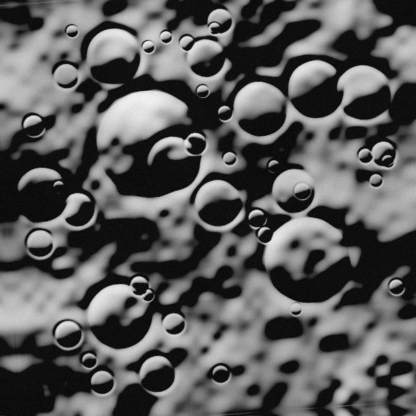
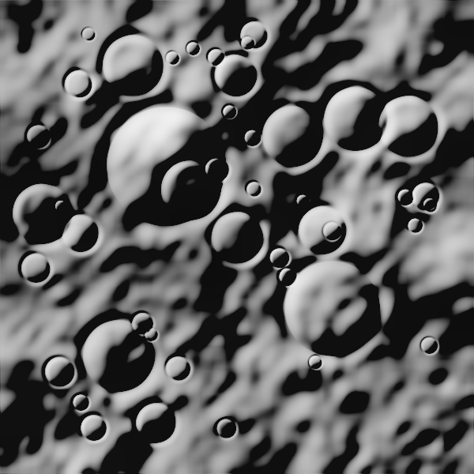
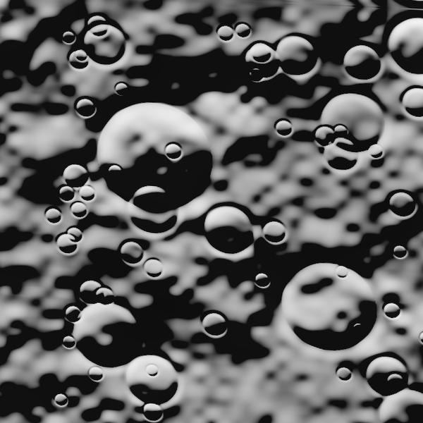
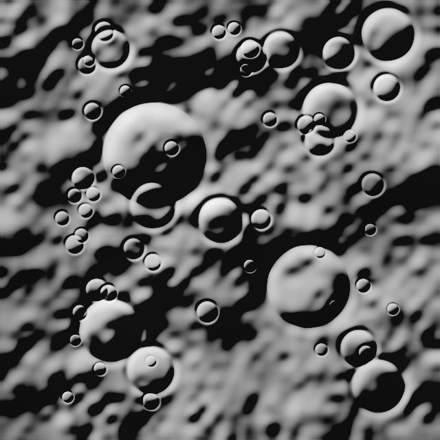
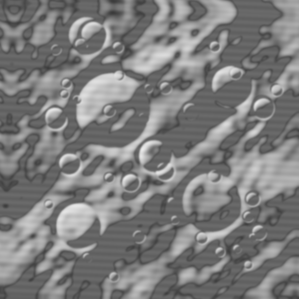
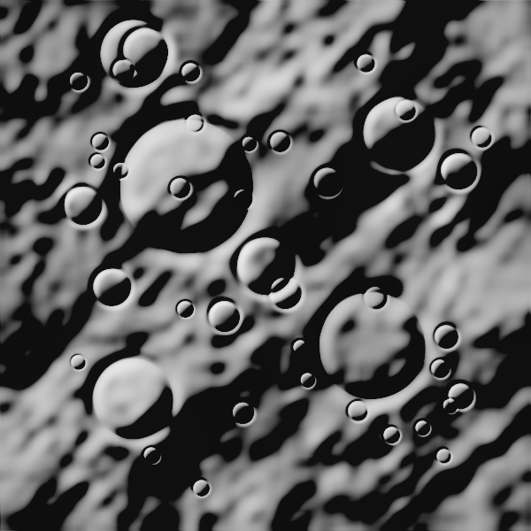

Severe 105° solar azimuth inversion (45° vs 150°). Resolves flipped crater shadows via gradient invariant representations.


1.35x zoom scale change, 12° orbital tilt, and perspective distortion aligned via scale-space pyramid matching.


Infrared absorption contrast inversion mapped to optical panchromatic surface using structural gradient descriptors.


Denoising, bilateral filtering, and contrast normalization for low-reflectance regolith.
Lommel-Seeliger topographic ridge mapping to eliminate shadow-induced false matches.
Octave Gaussian scale-space to align varying ground sampling distances (GSD).
RootSIFT / gradient orientation descriptors invariant to spectral band differences.
Lowe's distance ratio testing with bidirectional consistency verification.
Robust homography / affine model fitting with strict residual outlier rejection.
Local patch cross-correlation with quadratic peak interpolation down to < 0.1 px.
8x8 spatial binning to prevent crater clustering and guarantee surface-wide stability.
This deployment executes in pure client-side WebAssembly / JavaScript canvas directly on Netlify. You can drag and drop ANY two images and register them instantly without requiring a server!
Projects any pixel in the Source frame [x, y, 1]ᵀ to Reference frame coordinates [x', y', 1]ᵀ.
Loading verification report...
How to Deploy LunaMatch-R to Netlify (Zero Configuration Needed)
LunaMatch-R is fully configured and optimized for instant deployment on Netlify. It features both pre-computed Chandrayaan-2 benchmark datasets and an In-Browser Client-Side Computer Vision Engine that processes, registers, warps, and evaluates uploaded images with zero backend dependency!
Method 1: Netlify Drop (30 Seconds, No CLI)
- Log in to your account at app.netlify.com.
- Navigate to the "Sites" tab.
- Scroll down to the "Want to deploy a new site without connecting to Git? Drag and drop your site output folder here" section.
- Simply drag and drop the entire
lunamatchfolder into that dropzone! - Netlify instantly deploys your live URL (e.g.,
https://lunamatch-xyz.netlify.app).
Method 2: Git Repository + Netlify
- Push this project folder to your GitHub, GitLab, or Bitbucket account.
- In Netlify, click "Add new site" > "Import an existing project".
- Select your repository.
- Leave Build Command blank and set Publish Directory to
.(already configured innetlify.toml). - Click Deploy Site! Any subsequent git push automatically updates the live deployment.
Method 3: Netlify CLI
If you install Node.js and the Netlify CLI in the future:
Technical Architecture & Chandrayaan-2 Algorithmic Pipeline
1. Lommel-Seeliger Sun-Angle Normalization
Lunar regolith exhibits extreme backscattering (opposition surge) and lacks atmospheric diffusion. When solar azimuth changes between orbits (e.g. OHRC at 45° vs LROC NAC at 150°), crater rims invert shadows, rendering standard pixel-matching useless. LunaMatch uses a Lommel-Seeliger scattering formulation coupled with gradient magnitude fields to eliminate directional illumination dependencies.
2. Multi-Scale Scale Space Pyramids
To match differing resolutions (e.g., OHRC 0.25m/pixel vs TMC-2 5.0m/pixel), a Gaussian pyramid matches features across octaves, preserving descriptor invariance over large zoom scales.
3. Sub-Pixel Quadratic Interpolation
Discrete pixel correspondences are refined to fractional coordinates using 2D quadratic surface fitting over local normalized cross-correlation (NCC) patches, yielding spatial precision below 0.1 pixels.
4. Uniform Spatial Distribution Sampling
Lunar features tend to clump inside major crater floors. An 8x8 spatial grid enforces maximum quota limits per cell to distribute keypoints across the entire lunar surface, guaranteeing high Shannon spatial entropy and numerical stability in RANSAC matrix estimation.